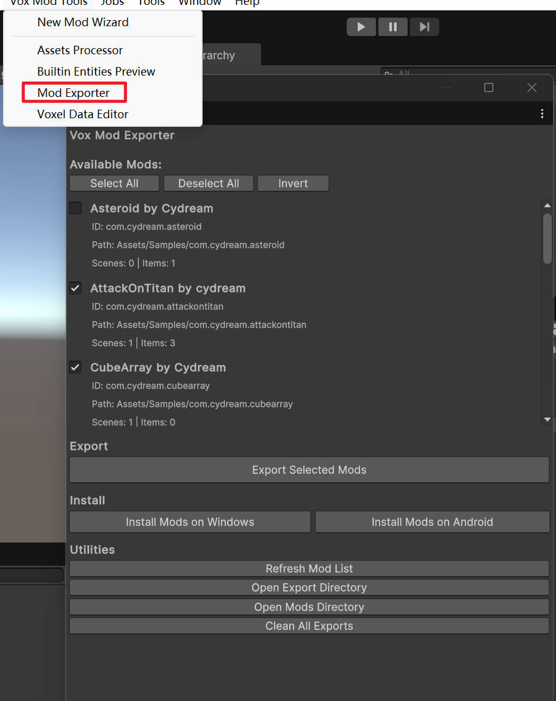

This guide explains how to validate, install, and test a mod built with the current TypeScript-based toolkit workflow.
Install the Puer-Project dependencies first, then run the per-mod lint step from that same folder:
cd /Puer-Project
npm install
After that, run:
cd /Puer-Project
npm run lint:mod -- com.yourname.yourmod
Use this to catch missing exports, type errors, and common script issues before you package the mod.
Use the Mod Exporter window in Unity for the normal workflow.

If you need to move the build to another machine:
Mods directory.Windows mods are loaded from:
%userprofile%\AppData\LocalLow\Cydream\Voxel Playground\Mods\
The game loads valid mod folders from that directory on startup.
For TypeScript gameplay logic, most runtime failures come from prefab setup rather than compilation. Check these first:
JsComponentProxy component.Scripts/index.ts exports the class used by the prefab.JsProperties.manifest.asset.Use logs to confirm the script was instantiated and to diagnose missing bindings.
Note: the in-game console is available in development builds.
If you are testing without VR, use the player log:
%userprofile%\AppData\LocalLow\Cydream\Voxel Playground\Player.log
You can launch the game with --flatscreen for faster desktop testing:
Voxel Playground.exe --flatscreen
Common controls:
W, A, S, DSpaceFor script-heavy mods, flatscreen mode is usually the fastest way to verify prefab setup and gameplay loops before switching to VR testing.